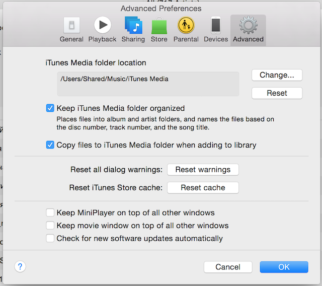
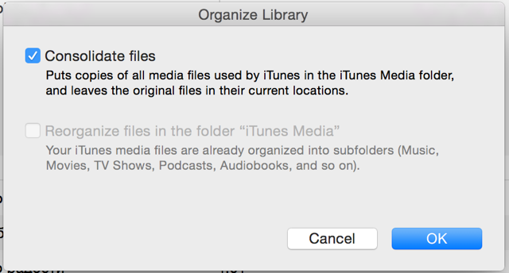

Syncing iTunes Library Between two Computers
Given:
- Two family Macs with iTunes 12 installed
- More than 10GB of audio files
I want to share my media library between these two computers and keep them synchronized. When I add new file on one computer, it should apear on another. When I delete a file on second computer - it should be deleted pn first. When I change iTunes playlists on one computer it should be changed on another. I don’t want to keep my media on Network storage (NAS) or External drive (USB), because it will be impossible to listen to the music on the go, when NAS or external drive is disconnected (e.g. in cafe).
To be able to use the same iTunes media library database on two computers I need to make my media files available by at the same path on disk. Normally, media files are under the user account folder. But it is possible to move them to the location common for all user accounts.
Next, I need to keep iTunes media file in sync.
After some research in the Internet I come to following solution.
- Backup tour iTunes media folder
/Users/user/Music/iTunes - Move iTunes media files to the
/Users/Shared/iTunes Mediafolder. Set new media files location:  Then run File > Library > Organize Library and select «Consolidate Files» to copy your files to new location.  - Remove your old Original files were copied, not moved. You need to remove them (if you have made a backup on step 1):
bash rm -rf /Users/user/Music/iTunes/iTunes\ Media - Close iTunes and copy your
/Users/user1/Music/iTunesto/Users/user2/Music/iTuneson second compuler - Copy
/Users/Shared/iTunes Mediafrom first to second computer to the same location. - Setup media folder synchronization between two computers using BitTorrent Sync. If you have smaller media library that fits into DropBox – then go for it. It is possible to use any cloud solution, e.g. at the moment (February 2015) Yandex Disk offers 10GB for free.
- Wait for synchronization complete.
You may start using iTunes on both computers. Keep in mind, that if you modify your media library from both computers simultaneously, you will have only recent changes. You may want to setup one-way synchronization: one computer will be the Master where you will manage your library and the second one is for listening only.